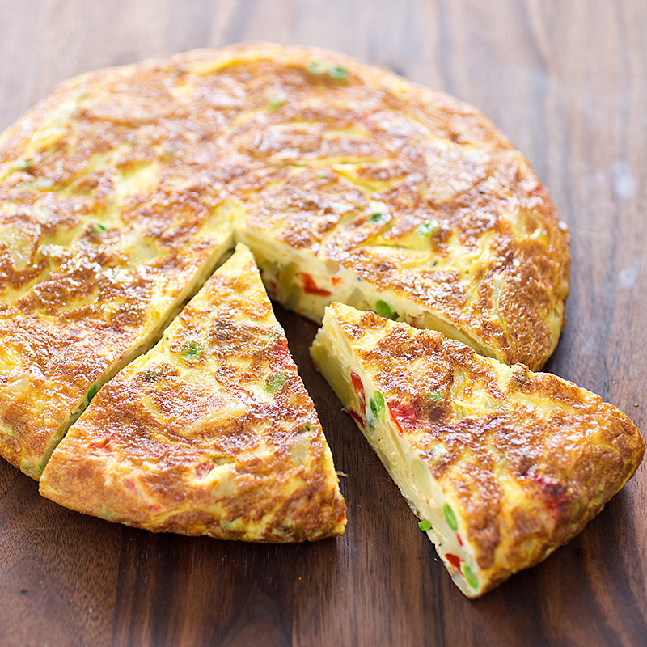

Paella
Spanish Tortilla
Paella (pai·ei·uh) is a classic Spanish rice dish made with rice,
saffron, vegetables, chicken, and seafood cooked and served in one
pan. Although paella originates from Valencia, it’s recognized as
the national food of Spain and there are several different
varieties. The most common types of paella are chicken paella,
seafood paella, or mixed paella (a combination of seafood, meats,
and vegetables).
In Spain, the dish goes by a few different names, including tortilla
de patatas, tortilla española, or tortilla de papas. (The American
translation is a Spanish Omelette.) It’s an egg and potato dish
that’s cooked in a skillet and served as a tapa, a main dish with a
baguette and green salad, or even enjoyed as a snack.


| Ingredients | |
|---|---|
| - | large pinch saffron strands |
| - | 1 vegetable or chicken stock cube, made up to 600ml |
| - | 3 tbsp olive oil, plus extra for drizzling |
| - | 125g chorizo, roughly chopped |
| - | 500g boneless, skinless chicken breasts or thighs (or a mix), chopped |
| - | 1 onion, finely chopped |
| - | 3 garlic cloves, finely chopped |
| - | 1 red pepper, deseeded and chopped |
| - | 2 tsp paprika |
| - | 250g Spanish paella rice |
| - | 4 medium tomatoes, roughly chopped |
| - | 75g frozen peas |
| - | 250g cooked prawns with shells on (thawed if frozen) and rinsed |
| - | small handful flat-leaf parsley, chopped, to serve |
| - | chopped lemon wedges, to serve |
| Ingredients | |
|---|---|
| - | 300 g waxy potatoes |
| - | 1 onion |
| - | olive oil |
| - | 5 large free-range eggs |
| Method | |
|---|---|
| 1 | Stir the saffron strands into the stock and set aside to infuse while you prepare the rest of the paella. |
| 2 | Heat 1 tbsp oil in a paella pan or a large deep frying pan with a lid. Tip in the chorizo and fry for about 3 mins until crisp and the oil has been released. Remove the chorizo and drain on kitchen paper, leaving the oil in the pan. |
| 3 | Stir the chicken into the pan and fry over a high heat for 7-8 mins, or until the meat is golden and cooked through. Transfer the chicken to a bowl and set aside. |
| 4 | Pour another 1 tbsp of oil into the pan, tip in the chopped onion and garlic and stir-fry for 4-5 mins, until softened and just starting to colour. Stir in the pepper and paprika with the remaining tablespoon of oil and stir-fry for a further 1-2 mins. The pan should have lots of crispy, brown bits on the bottom, which will all add flavour. |
| 5 | With the heat still quite high, quickly stir in the rice so it is well-coated in the oil, then pour in the saffron-infused stock plus 450ml boiling water, scraping up the sticky brown bits from the bottom of the pan with a wooden spoon. |
| 6 | Return the browned chicken pieces to the pan, then add the chopped tomatoes. Cover the pan and cook on a medium heat for 10 mins, stirring once or twice. Scatter the peas, prawns and fried chorizo over the top, cover again and leave to cook a further 5-10 mins, or until the rice is just cooked and most of the liquid in the pan has been absorbed. |
| 7 | Remove the pan from the heat, put the lid on and leave to rest for 5 mins. Stir a few times to mix the ingredients, season to taste and scatter over the chopped parsley. Serve with lemon wedges and an extra drizzle of oil, if you like. |
| Method | |
|---|---|
| 1 | Peel the potatoes using a speed-peeler, then carefully cut them into thin slices. Pat the potato slices dry with a clean tea towel. |
| 2 | Peel and finely slice the onion. Drizzle 2 tablespoons of oil into a small frying pan over a medium heat, then add the onion and potatoes. |
| 3 | Turn the heat down to low and cook for 25 to 30 minutes, or until the onions are turning golden and the potato slices are cooked through. Try not to stir it too much or the potatoes will break up – just use a fish slice to flip them over halfway through. |
| 4 | Crack the eggs into a mixing bowl, season with a tiny pinch of sea salt and black pepper, then whisk together with a fork. |
| 5 | When the onions and potatoes are cooked, remove the pan from the heat and carefully tip them into the eggs. Transfer the mixture back into the frying pan and place it over a low heat. Cook for around 20 minutes, or until there’s almost no runny egg on top. |
| 6 | Use a fish slice to slightly lift and loosen the sides of the tortilla. Carefully flip the pan over a dinner plate and tip out the tortilla, then slide it back into the pan and cook for another 5 minutes, or until golden and cooked through. |
| 7 | Turn out the tortilla onto a serving board, then cut into 6 wedges and serve hot or cold with a simple green salad. |